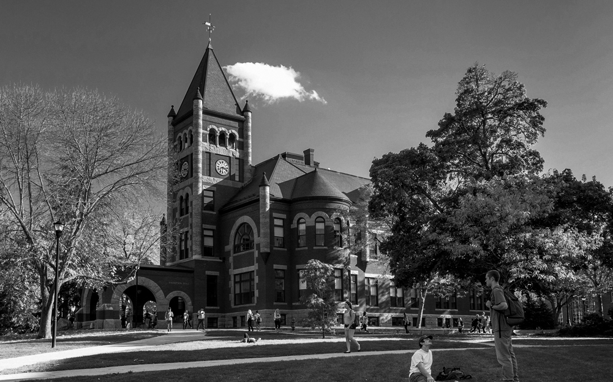
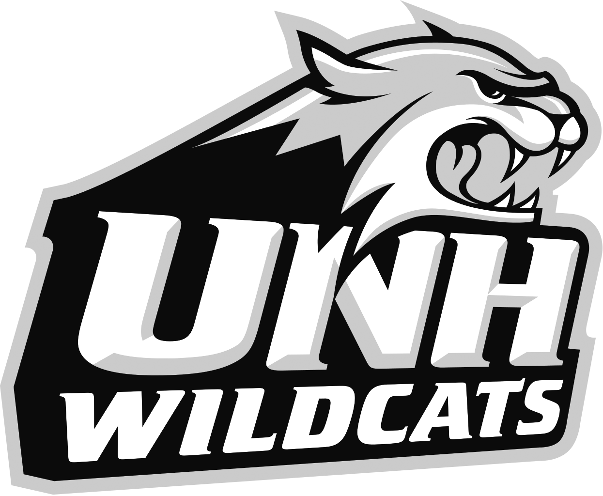
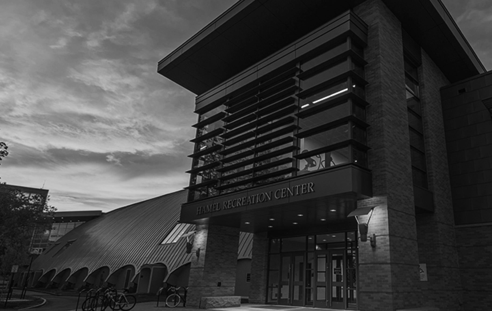
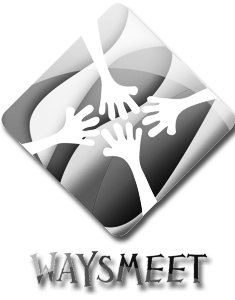
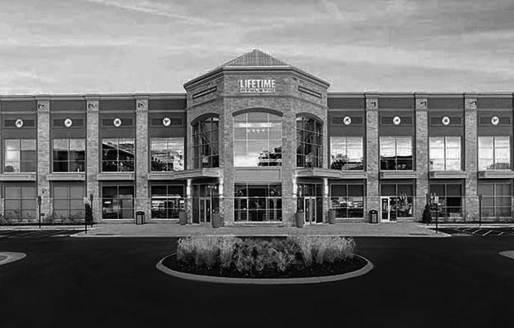

I am a junior in the Dietetics Program at the University of New Hampshire. I’m passionate about nutrition and fitness as it relates to the overall well-being of an individual. I believe in spreading knowledge about the body, but more importantly the body is able to stay healthy. I think improvements through nutrition and fitness are essential.
My passion for nutrition was quickly realized after a car accident, which left me sitting on the couch for 2 months. As a three-season athlete, staying in shape and remaining healthy is expected. After no longer being able to attend practices, games and team events due to my concussion, staying fit and keeping occupied was very difficult. With no acknowledgement of my prior eating habits due to healthy prepared team dinners and constantly being active left me uneducated on proper nutrition. With lots of free time on my hands, I would consume unhealthy amount of food to cure boredom. As my eating habits worsened, a change in my metabolism occurred and I experienced serious weight gain. I began to see a huge change in my overall wellness both physically and mentally. I looked tired, felt unmotivated and really needed to change. At this time in my life I started to realize the importance of nutrition.
Researching to get an improved understanding of nutrition put in motion the process of bettering myself. Changing the way I viewed my nutrition while being very open about it helped to promote a healthy lifestyle onto my peers. Cutting bad habits and accurately fueling my body changed the way I live my life. The feelings and views I once had towards myself were replaced with a new positive and motivated outlook. My performance on the field was ten times better than before my accident. I was able to motivate my friends through friendly competition to improve their eating habits. I even began helping
my overweight grandmother lose unhealthy weight that she had gained due to a poor diet. To this day, she still is using the meal plan I created for her, which included a low impact workout. My grandmother is now the healthiest she has been in years and has lowered her risk of disease. In a sense my accident was the avenue leading to the discovery of my passion. I’ve learned that concerns with health and fitness are increasing within public and private communities. I was able to improve my understanding of maintaining and promoting healthy lifestyles and overall well-being.
Having the ability to help and motivate others to live a healthier lifestyle by realizing the importance of mental and physical wellness is a concept I believe strongly in. As a student I am determined and dedicated to perform to my greatest ability to achieve my goals. I intend to be a role model as I inspire people to live healthier lifestyles. Although a car crash is a horrible event for anyone, it was this tragedy that brought light to my passion enabling me to learn a lot more about my future goals and myself. I hope to help others by bettering themselves both physically and mentally through proper nutrition, wellness and exercise.
student | Dec '16 - now
Majoring in Dietetics at UNH, with a focus in Kinesiology. In addition to my classes, I am the captain of my flag football team and a member of the club field hockey team.
volunteer | Jan '16 - now
Responsible for providing athletes with a nutritious snack before or after practice and games. Keeping them properly fueled for their long day while gaining experience in the field of sports nutrition by working along side the UNH Wildcats Sports nutritionist.
qualified TRX trainer | Feb '17 - now
fitness assisstant | Dec '16 - now
volunteer | Fall '16
Providing access to organic meals to families in need throughout the community. Duties include prepping, serving, cleaning up meals.
member | Fall '16 - now
Organizing activities involved in community service work, fundraising and educational outreach. Educating the community and creating nutrition awareness within the campus.
team member | Fall '15
